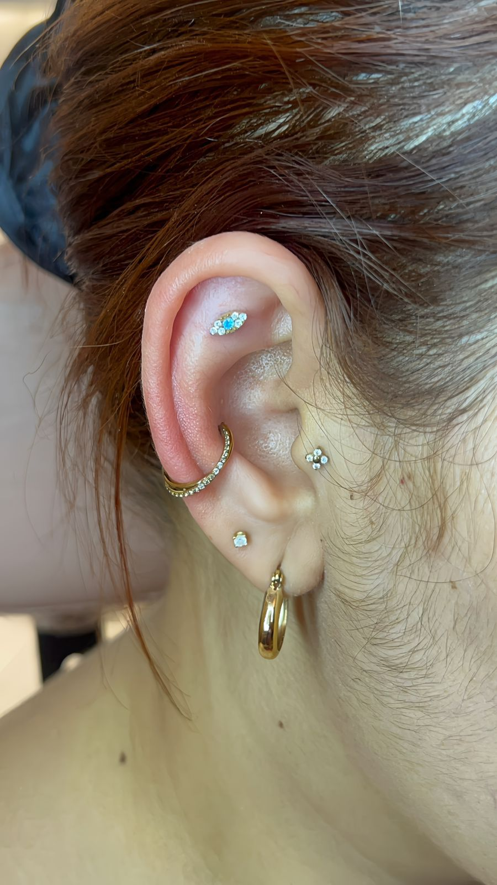
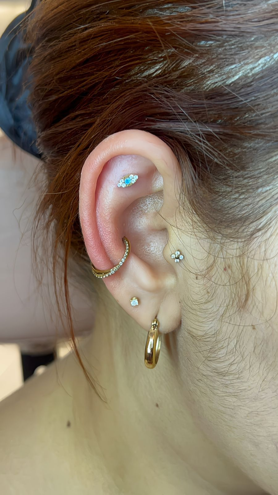
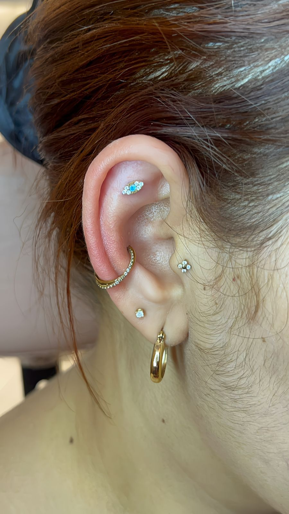

Nossos Serviços
Carinho, cuidado e segurança para realizar o primeiro furo de orelha — ou renovar seu estilo.

 

Atendimento humanizado para bebês, crianças e adultos.
Carinho, cuidado e segurança para realizar o primeiro furo de orelha — ou renovar seu estilo.
